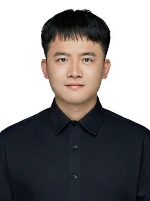

Yuchen Mao
First-Year Ph.D. Student in Statistics
Rutgers University–New Brunswick
yuchen.mao@rutgers.edu
Hill Center
Piscataway, NJ 08854
About me
I am currently a first-year Ph.D. student in the Department of Statistics at Rutgers University–New Brunswick, advised by Prof. Yifan Hu.
My research develops data-driven optimization methods for operational decision-making under uncertainty, with applications to revenue management, supply networks, and production planning. I am interested in stochastic and robust optimization, econometrics, and AI methods, including machine learning and LLMs.
Before joining Rutgers, I was a research associate and completed an M.Sc. in Management Science at the University of the Chinese Academy of Sciences, under the supervision of Prof. Shuming Wang. I received my B.Sc. in Statistics from Central China Normal University.